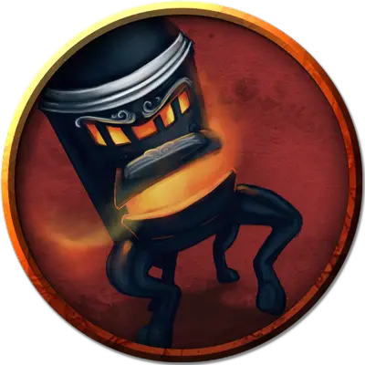

Оживлённая печь
Animated Stove
Большой Конструкт, без мировоззрения

Класс Доспеха 17
Хиты 50 (10к10 - 5)
Скорость 30 футов
| мод | спас | ||
|---|---|---|---|
| СИЛ | 14 | +2 | +2 |
| ЛОВ | 10 | +0 | +0 |
| ТЕЛ | 10 | +0 | +0 |
| мод | спас | ||
|---|---|---|---|
| ИНТ | 3 | −4 | −4 |
| МДР | 3 | −4 | −4 |
| ХАР | 1 | −5 | −5 |
Чувства слепое зрение 30 футов (слеп за его пределами), пассивное Восприятие 6
Опасность 3 (700 опыта)
Бонус мастерства +2
Действия
Удар. . Рукопашная атака оружием: +6 к попаданию, досягаемость 5 фт., одна цель. Попадание: 11 (2к8 + 2) дробящего урона.
Огненная отрыжка (Перезарядка 4-6). Печь изрыгает из себя 15-футовый конус огня. Каждое существо в этой области должно совершить спасбросок Сл 10 Ловкости, получая 22 (4к10) урона огнём в случае провала и половину этого урона в случае успеха.
Описание
Печь является оживленным предметом благодаря заклинанию оживление вещей [animate objects], сделанному постоянно действующим заклинанием исполнение желаний [wish]. Она отрывается от своего дымохода и бросается вперед на когтистых лапах, атакуя незваных гостей.